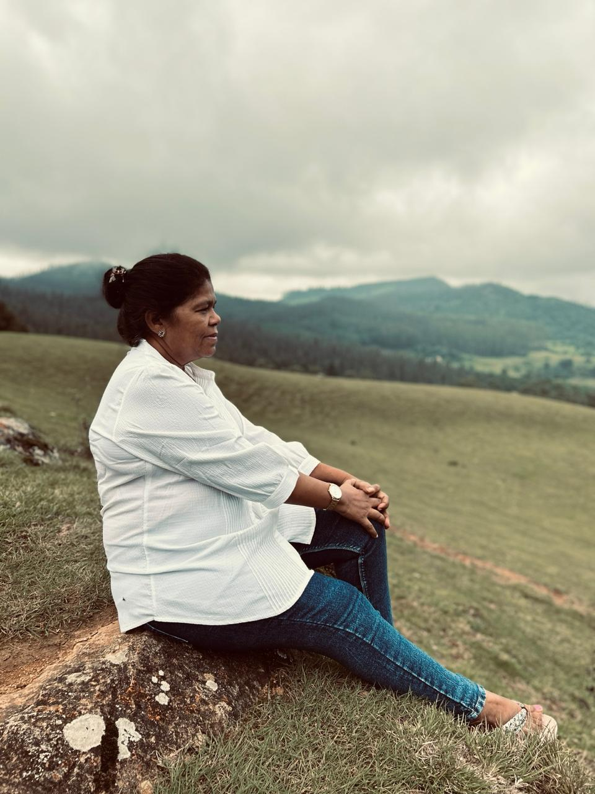

The epitome of strength and endurance.
- Born on 21st March 1968, in Chennai, Tamil Nadu, into a family with 2 elder syblings, my mother wasn't the favourite child. She wasn't pampered like her elder syblings, but she was the most purest. She did not rant, she loved them unconditionally.
- She met my father during her late 20-early - 30s, got married and had my elder brother in April of 1997. 3 years later, she was conceived with me, but my Father had his insecurities and if a fit of rage and doubts, he pushed her down a flight of stairs. My mother wasn't rushed to the hospital, she did not leave my father, she stayed and gave birth to me, a spitting image of my father.
- My father never changed, yet she loved him, yet she provided for us and still works, to ensure that we don't completely feel life's burdens. Yes my life is hard, yes I always want to give up, but my mother did not endure hell all her life just for me to give up. And that is my inspiration.